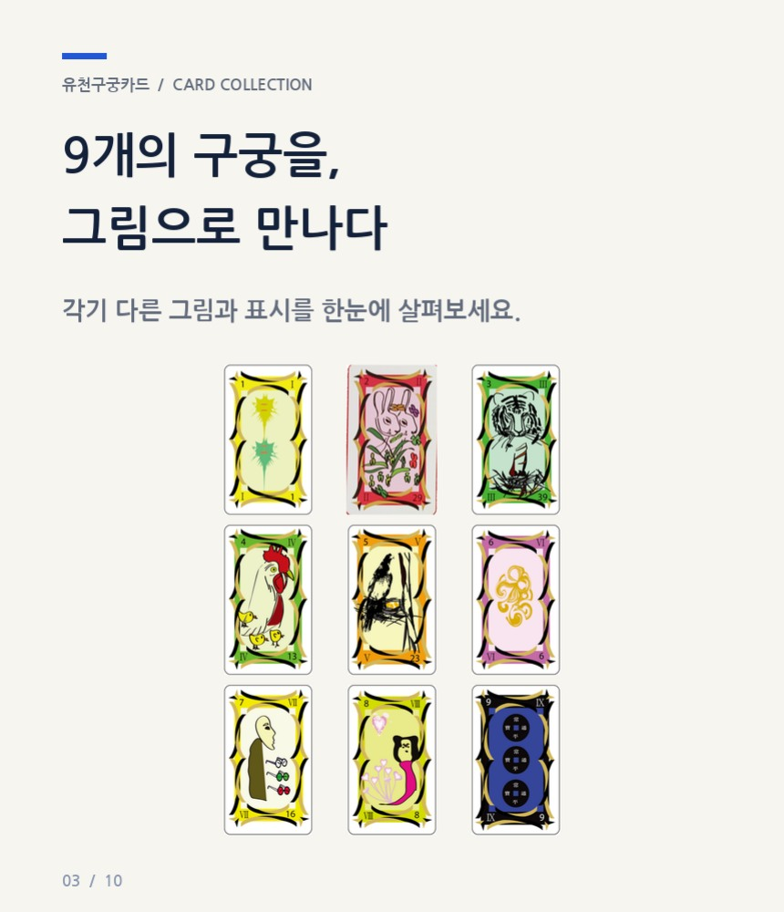
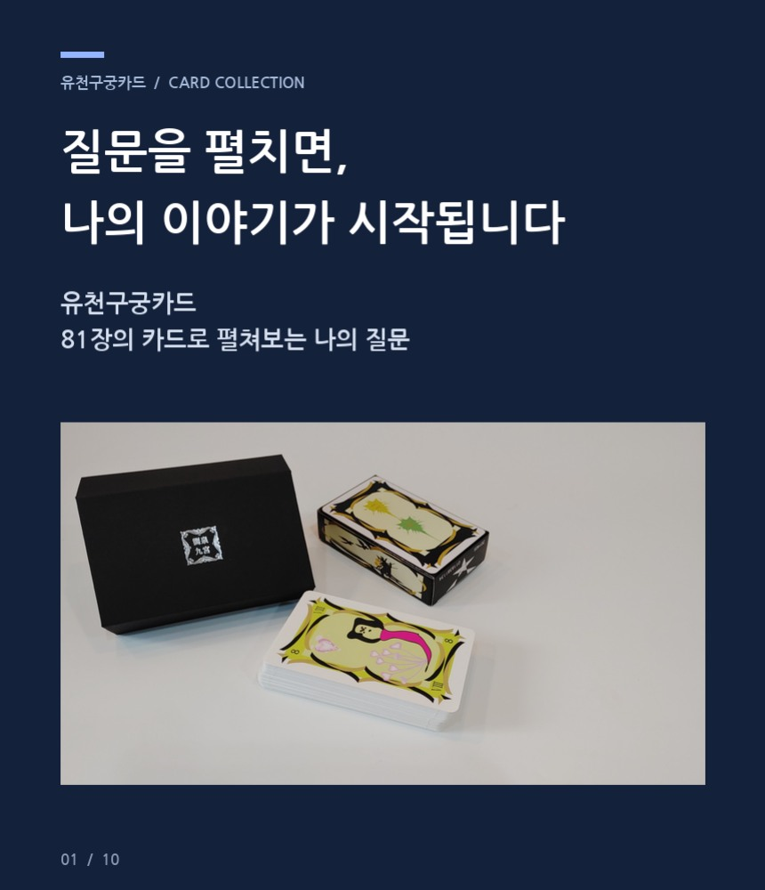
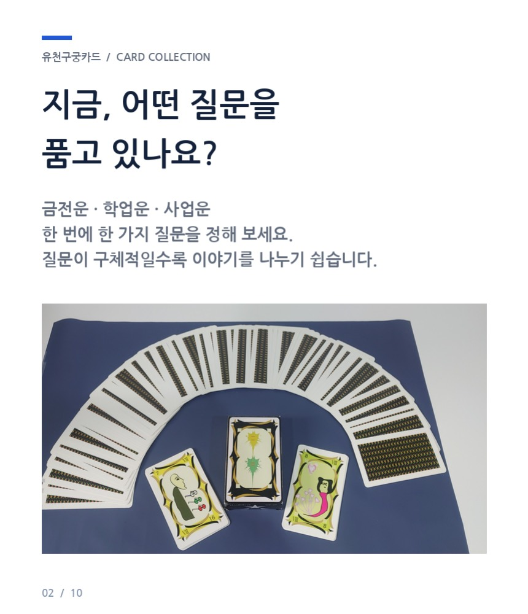
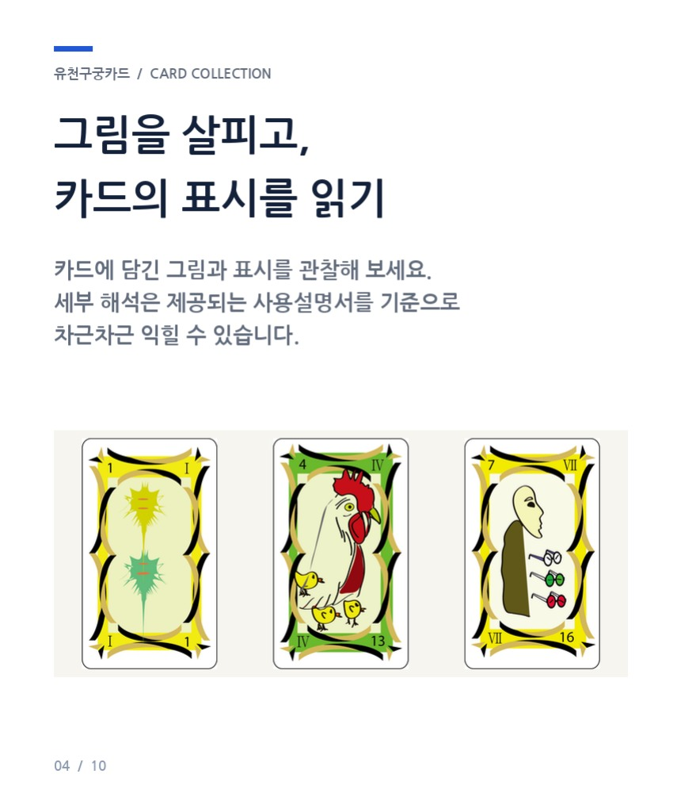
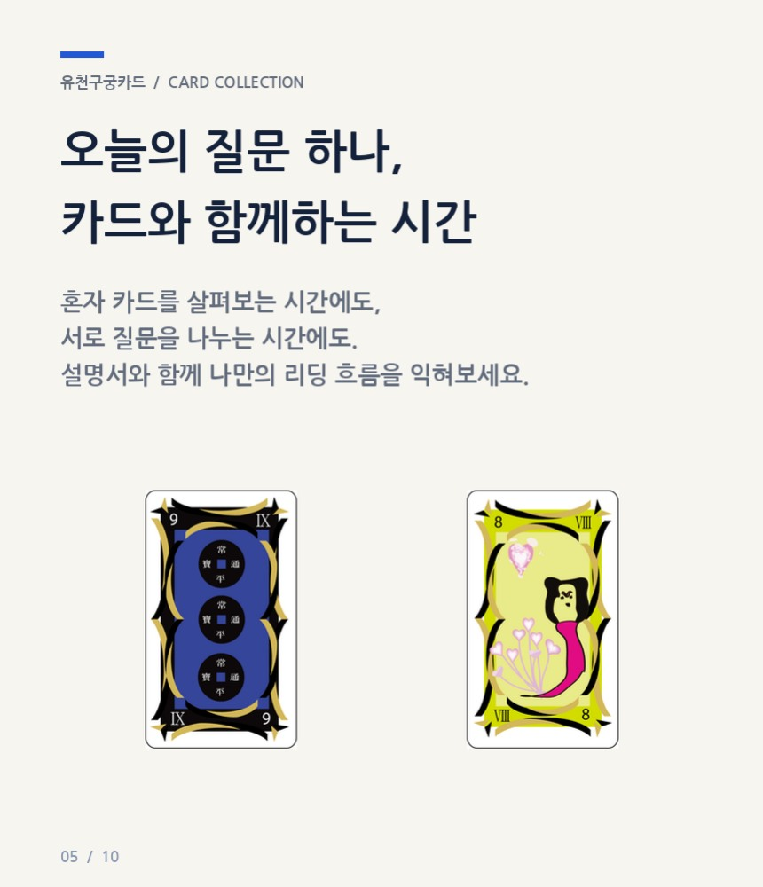
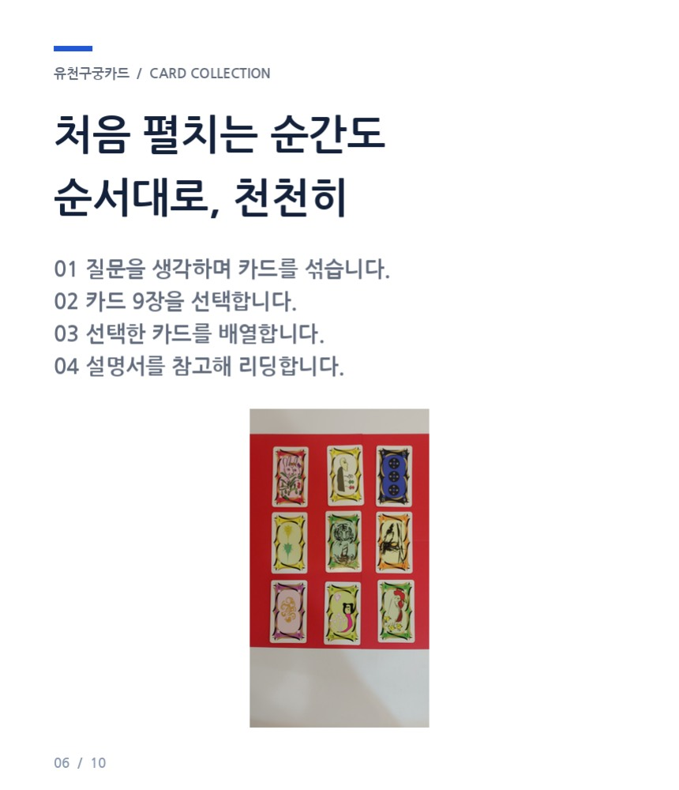
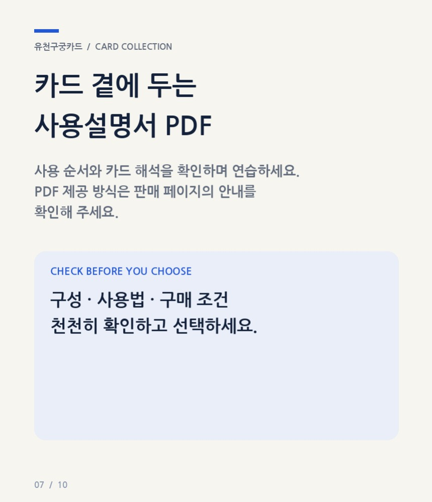
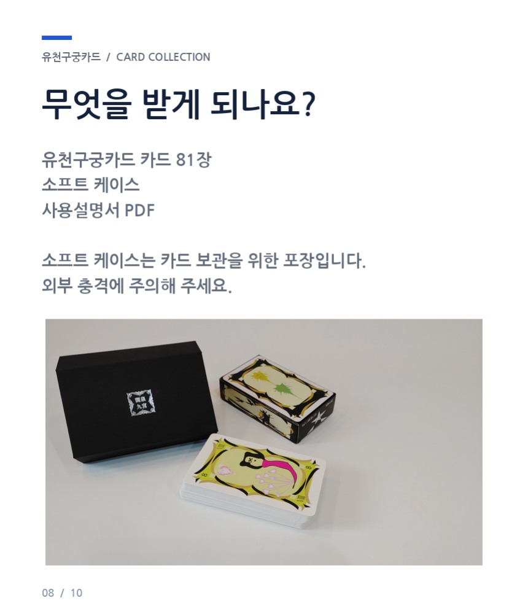
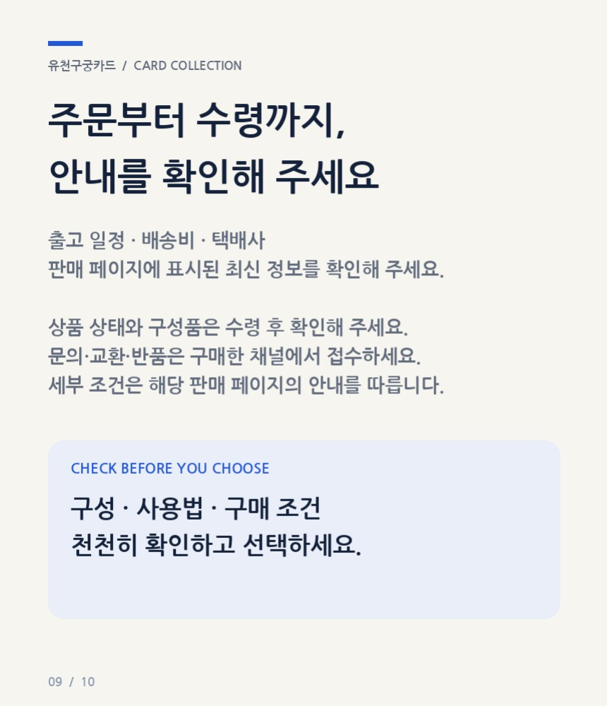
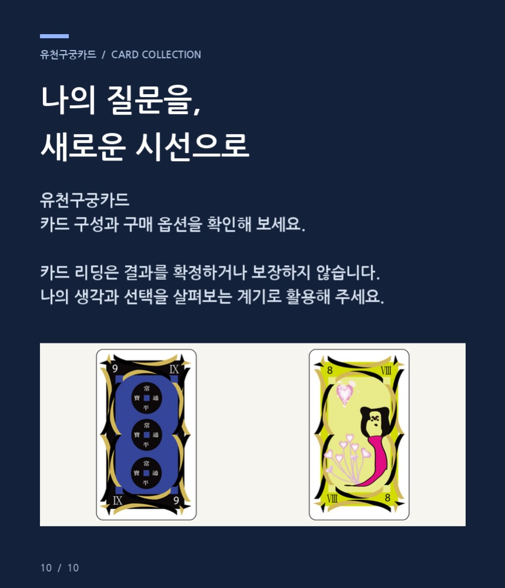

풍부한 카드 구성
아홉 개의 구궁마다 서로 다른 그림과 상징을 담아 다양한 질문에 활용합니다.
PROJECT 02 · ORIENTAL SYMBOL SYSTEM
하나의 질문을 아홉 개의 시선으로 펼쳐보는 81장 카드 컬렉션입니다. 동양의 구궁 체계와 현대적인 이미지 언어를 연결해 생각을 정리하고 대화를 시작하는 도구로 설계했습니다.


01 / CONCEPT
금전운, 학업운, 사업운처럼 지금 가장 궁금한 질문 하나를 정한 뒤 아홉 장의 카드를 펼칩니다. 서로 다른 그림과 표시를 관찰하며 한 방향에 갇혀 있던 생각을 넓혀갑니다.
정답을 단정하기보다 자신의 생각과 선택을 살펴보는 계기로 사용할 수 있도록 카드와 해설의 흐름을 구성했습니다.
아홉 개의 구궁마다 서로 다른 그림과 상징을 담아 다양한 질문에 활용합니다.
질문을 여러 관점으로 나누어 살펴보며 더 구체적인 이야기를 끌어냅니다.
카드 사용 순서와 해석을 담은 사용설명서로 처음에도 천천히 시작할 수 있습니다.
02 / FULL DETAIL
카드의 특징과 사용 순서, 구성품과 구매 전 안내를 한 흐름으로 확인해 보세요.









START YOUR PROJECT
카드 콘텐츠 기획부터 디자인과 상세페이지 제작까지 오로라닉이 함께합니다.